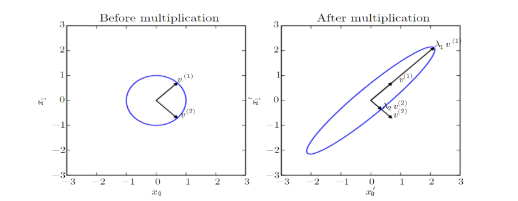

이번주 선형대수 // 다음주 확률 // optimization
Notations
- Scalar
Single number. (real number or natural number)
- Vector
숫자들이 순서대로 배열된 1차원 배열.
- Matrix
2차원 배열. (벡터를 쌓아놓은 것)
\[{\bf A} = \begin{bmatrix}A_{1,1} & A_{1,2} \\ A_{2,1} & A_{2,2} \end{bmatrix}\]
- Tensor
3차원 이상의 배열.
Transpose & Multiplication
- 1. Transpose
\({\bf A}_{i,j}^\top = {\bf A}_{j,i}^\top\)
- 2. Addition
- \({\bf A} + {\bf B} = {\bf C}\) where \(C_{i,j} = A_{i,j} + B_{i,j}\)
- \(a\cdot {\bf A} + c = {\bf G}\) where \(G_{i,j} = a\cdot A_{i,j}+c\)
\(\begin{bmatrix} a_{11} & a_{12} \\ a_{21} & a_{22}\end{bmatrix} + \begin{bmatrix} b_1 \\ b_2 \end{bmatrix}=\begin{bmatrix} a_{11} + b_1 & a_{12} + b_2 \\ a_{21} + b_1 & a_{22} + b_2 \end{bmatrix}\)
inner product는 차원을 줄이는 것이라면 outer product는 차원을 늘리는 것.
- 3. Multiplication
Multiplication
matrices \({\bf A} \in \mathbb{R}^{a_1\times b}\) and \({\bf B} \in \mathbb{R}^{b\times a_2}\)의 곱은 아래와 같다.
\[{\bf C} = {\bf A}{\bf B}\]
where \(C_{i,j} = \sum_{l}A_{i,l}B_{l,j} (i,j) = \{1,\dots,a_1\}\times \{1,\dots, a_2\}\).
Hadamard product
Hadamard product (element-wise product) of \(A \in \mathbb{R}^{a\times b}\) and \(B^{a\times b}\)
\[{\bf C} = {\bf A} \odot {\bf B}\]
where \(C_{i,j} = A_{i,j}B_{i,j}.\)
아다마르 곱(또는 요소별 곱셈, Hadamard product)은 다양한 분야에서 사용되며 주로 두 개의 행렬 또는 벡터 간의 요소별 연산을 나타냅니다. 아다마르 곱은 다음과 같은 상황에서 쓰입니다:
신호 처리: 아다마르 곱은 디지털 신호 처리에서 자주 사용됩니다. 예를 들어, 두 시계열 데이터를 아다마르 곱하여 두 신호 간의 상관 관계를 계산하거나 신호를 필터링하는 데 사용될 수 있습니다.
이미지 처리: 컴퓨터 비전 및 이미지 처리에서 두 이미지나 이미지와 마스크(필터) 사이의 요소별 곱셈은 특정 이미지 처리 작업에 사용됩니다. 예를 들어, 이미지를 선명하게 만들거나 특정 부분을 강조하는 데 유용합니다.
뉴럴 네트워크: 인공 신경망에서 아다마르 곱은 활성화 함수와 가중치 간의 요소별 연산에 사용됩니다. 이를 통해 네트워크의 비선형성을 증가시키고 특정 기능을 강조할 수 있습니다.
행렬 연산: 다른 행렬 연산과 결합하여 특정 형태의 계산을 수행할 때 아다마르 곱이 사용될 수 있습니다. 예를 들어, 고유값 분해(Eigendecomposition)와 같은 행렬 분해 기술에서도 사용됩니다.
요소별 연산: 두 개의 행렬 또는 벡터 사이의 각 요소를 독립적으로 처리하고 싶을 때 아다마르 곱을 사용합니다. 이렇게 하면 각 요소 간의 관계를 보존하면서 연산을 수행할 수 있습니다.
아다마르 곱은 행렬 곱셈과는 다르며, 두 개의 행렬 또는 벡터의 크기가 동일해야 합니다. 따라서 요소별 연산을 수행하려면 같은 크기의 입력이 필요합니다.
4. Properties of multiplication
5. Linear equation
\({\bf A}{\bf x} = {\bf b}\) where \({\bf A} \in \mathbb{R}^{m\times n}, {\bf b} \in \mathbb{R}^{m\times 1}\)
Identity and Inverse Matrix
Identity matrix: all diagonal terms are one, others are zero such that \({\bf I}_n \in \mathbb{R}^{n\times n}\)
- 해가 엄청나게 많은 상황
- 해를 못구하는 상황
Norms and Special Kinds of Matrices and Vectors
1. Norm
- Definition of \(L^p\) norm
\[||{\bf x}||_p = \left(\sum_i |x_i|^p\right)^{1/p}\]
Norm function \(f\) 는 다음을 만족한다.
- \(f(x) = 0 \Rightarrow {\bf x} = 0\)
- \(f(x+y) \leq f(x) + f(y)\) (triangle inequality)
- \(\forall \alpha \in \mathbb{R}, f(\alpha {\bf x}) = |\alpha|f(x)\)
- \(L^1\) and \(L^0\) norm are considered to address the above.
\[||{\bf x}||_1 = \sum_i |x_i|\]
\[||{\bf x}||_0 = \sum_i \mathbb{I} (x_i \neq 0)\]
high dimension에서는 \(L^0\)나 \(L^1\)을 많이 쓴다.
- \(L^2\) norm은 \(0\)과 \(0\)이 아닌 기계학습 구별에서 너무 큰 값을 제공한다.
- Other norms such as max norm and Frobenius norm
\[||{\bf x}||_{\infty} = \max|x_i|\]
\[||{\bf A}||_F = \sqrt{\sum_{i,j}{\bf A}^2_{i,j}}\]
- Definition of an angle between two vectors.
\(\cos \theta = \frac{x^\top y}{||x|| ||y||}\)
\(w_1(1,0,0) + w_1(0,1,0) + w_3(0,0,1) = (w_1, w_2, w_3)\)
Linear Dependence and Span
Decompositions
1. Eigendecomposition
\[{\bf A} = {\bf V}\text{diag}({\lambda}){\bf V}^{-1}\]

데이터의 correaltion이 강할때 오른쪽 그림과 같다.
2. Singular value decomposition
Decomposition for a non-square matrix \({\bf A} \in \mathbb{R}^{n\times m}\)
\[{\bf A} = {\bf U}{\bf D}{\bf V}^\top\]
where \({\bf U} \in \mathbb{R}^{n\times n}, {\bf D} \in \mathbb{R}^{n\times m}\), and \({\bf V}\in \mathbb{R}^{m\times m}\).
The Moore-Penrose Pseudoinverse, Trace, and Determinant
- linear equation의 해가 너무 많아서 못푸는 문제 같은 경우는 대안이 있지 않을까?
변환시킨 경우 \(n\)차원 중 어떤 한 축이 0이면 \(n-1\) 차원. 그럼 볼륨이 0이된다.
Example: PCA
통계: 분산이 가장 큰 축을 찾는다.
input data는 엄청 큰데 작은 차원으로 줄어들면서 다시 커지는 과정을 PCA가 하고 있다. 단, 제약이 있음.
인코딩 디코딩 개념 알아두자.
\(f(x)\): 인코딩 (관측을 하는 큰 차원에서 관측하지 못하는 작은 차원으로)
\(g(f(x))\): 디코딩 (관측하지 못하는 작은 차원에서 관측을 하는 큰차원으로)